Collimation of a Newtonian system telescope using a pinhole collimator.
How to collimate a telescope? You will find out in this tutorial. :)
Telescope collimation is aimed at correct alignment with respect to each other: telescope mirrors, telescope structure, focuser.
It is more profitable to learn collimation with the use of a large telescope, because there there is better access and you can see everything better.
The tutorial is divided into three independent sections, click the appropriate title to go to the section suitable for you.
TELESCOPE COLLIMATION - simplified - for complete beginners
This section contains a description of simplified telescope collimation, the goal is to get a satisfactory level, at the initial stage of the telescope collimation adventure this should be enough.
The section consists of several topics, click the relevant name to be taken to the section you are interested in.
For collimation we will use a very simple and free collimator, which you can make on your own.
Model I (old version) - You need a photographic film box, if you do not have one, you can go to your local photographer and ask for an unnecessary one. There are several types of photographic film boxes, but not all of them fit a 1.25" focuser, we need a version with a smaller diameter and a smooth tube. In the box we cut out the bottom, and in its lid, exactly in the middle, we make a small hole with a diameter of 1-3 mm. On the inside of the lid we glue a reflective ring in the form of a flat technical washer, the kind used for screws and nuts.
1-1
Unfortunately, a sign of the times, film has become a thing of the past, and it is becoming increasingly difficult to obtain boxes of them, so...
Model II (new version) - We need a suitable juice in a bottle, we are interested in its cap. It is fortunate that many types of caps have an inner ring that fits perfectly into the tube of 1.25" astronomical eyepieces, so it is enough to provide such a cap with a hole and a reflective ring, and then press it onto the acquired eyepiece tube and we have a ready-made collimator.
Many products have a cap very close in size to the one we need, but they are a tad too tight, and that's enough for that to disqualify them for our applications. This correct cap size will fit all 1.25" diameter eyepiece tubes, even those from better and inferior manufacturers, and as you know, eyepiece tubes can vary in diameter, despite the standardization of their size.
The cap can be left in its original form, but having a bit of desire, we can cut off the outer ring and transform it into the object shown below.
1-2
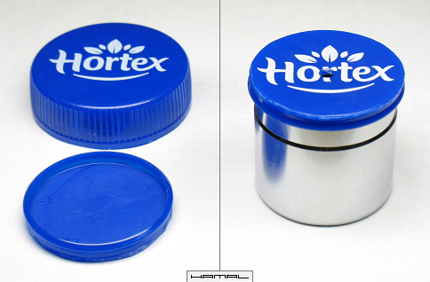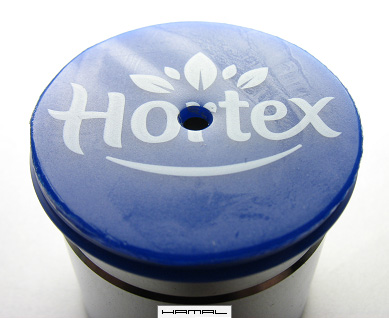
By the way, these caps make nice plugs for 1.25" astronomical eyepieces.
The collimator can also be made from an old astronomical eyepiece or printed on a 3D printer or even bought, this issue I already leave to your resourcefulness.
-- Reflective ring --
Regardless of the version of the collimator, we glue a reflective ring on the underside of the lid, shiny but porous, because this kind of surface acts like a reflector used on clothes, as it catches light from different directions. When the reflective ring used is smooth like a mirror, it reflects only directed light, doing reflections only when it is perfectly aligned with our eyes and the light source, which means that in 99% of cases, it will be dark for us and will not do its job. The situation is similar to when someone uses a phone screen to reflect the sun's rays in our direction, flashing into our eyes only when perfectly aimed, at other angles, there is no effect.
The size of the reflective ring used matters, as you will read in more detail HERE below. (If necessary, you will return here by pressing the BACK button on your browser)
This type of collimator is inserted into the focuser just like an observation eyepiece.
To collimate the telescope, you need a marker in the form of a spot in the center of the primary mirror. If the mirror does not have a spot, then you need to apply it yourself, unfortunately, we need to extract the primary mirror from the telescope tube for this purpose.
I make the spots from black stickers bought at the stationery store. It can be a spot in the form of a circular sticker - • or a ring sticker - O.
The spot should be placed as precisely as possible in the very center of the primary mirror, while being careful not to touch, dirty, or damage, its aluminum coating.
We place the spot once and leave it permanently, because, it will be needed for the next collimations.
The spot does not adversely affect the image obtained by the telescope because, the center of the primary mirror is not involved in the image formation, as it is obscured by the secondary mirror.
For collimation with a pinhole collimator, a circular spot is sufficient, for collimation with a laser collimator, an annular spot is necessary because of the need to reflect the laser beam into the ring hole.
Before you take action, read the following description first.
2-1 circular spot
2-2 ring spot
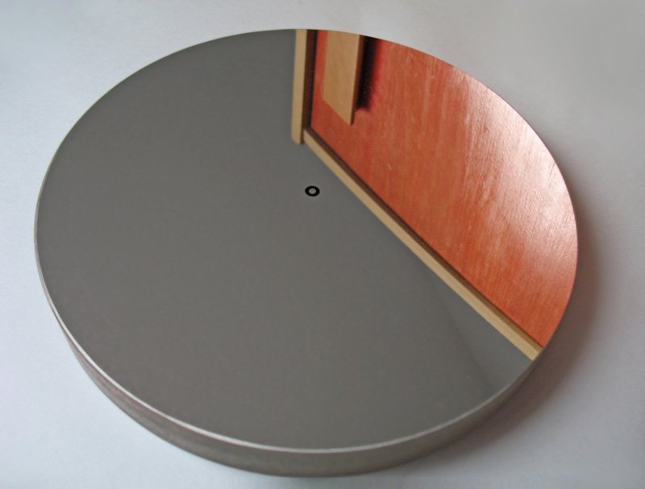
-- Reflective ring in collimator and spot on primary mirror --
I will describe in a little more detail the dependencies that affect the title elements. The graphic presented is on a large scale so that it is easier to see what I am writing about.
The size of the reflective ring in the collimator forces the size of the spot on the primary mirror, and vice versa, the size of the spot on the primary mirror forces the size of the reflective ring in the collimator. If we don't yet have a spot on the primary mirror and are just sticking it on, we can afford to adjust the spot on the primary mirror and the reflective ring in the collimator according to our preferences. If we already have a spot on the primary mirror, then we need to match the size of the reflective ring in the collimator to the size of the spot on the primary mirror.
Below is a description of the components.
2-3
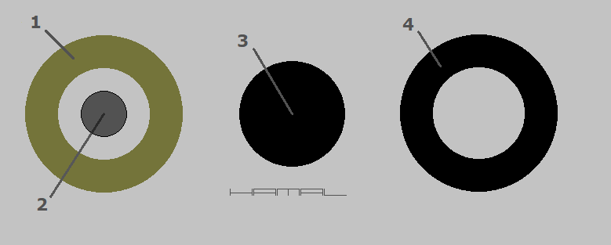
1 - Reflective ring.
2 - The hole in the collimator (through which we look).
3 - The center spot of the primary mirror, circular-shaped.
4 - The center spot of the primary mirror, ring-shaped.
Analysis of the issue.
We will analyze the two sizes of the reflective ring in the collimator and the two types of spots on the primary mirror. One spot is circular and the other is annular.
The following remarks contain my experience in the said field, practice will quickly confirm to you the truth of the guidelines I have given below.
As you can see below, the combination of reflective ring A and spot 1 (A+1) is not a happy combination, due to the fact that in the collimation process, with small inaccuracies, it is difficult to assess their fit. A much better combination, as you can see, is the combination of reflective ring B and spot 1 (B+1), as you can nicely see their mutual offsets, and the correct fit (B+1 centr).
Another unfortunate combination is reflective ring A and spot 2 (A+2), it is difficult to judge the correctness of collimation, the objects cover each other, in this case, it is worth using a larger reflective ring, namely B (B+2). We can clearly see how the reflective ring B and spot 2, form an easy to observe duo (B+2 centr).
I hope it is now clear what to follow when choosing the type and size of the spot on the primary mirror and the reflective ring in the collimator.
During collimation, the telescope can be pointed at a bright daytime sky or an incandescent light bulb suspended from the ceiling, but the best effect will be obtained by shining a bright fluorescent lamp into the telescope tube, at the point indicated in the graphic below. The fluorescent light intensely illuminates the primary mirror and, incidentally, also the collimator from the inside, which gives us full control over what is happening in the process of collimating the telescope.
NOTE - I use a spiral fluorescent lamp (in a cover, as below), because it gives the most favorable illumination, but you should know that breaking such a fluorescent lamp, especially when it is on, is very dangerous, because of the mercury vapor released into the environment. The problem affects all fluorescent lamps, including those under the ceiling and in desk lamps. An additional disadvantage of such a solution is the need for mains power from an outlet, which, in the case of field work, is a serious inconvenience.
The design of the telescope requires that it be possible to tilt the primary mirror in different directions within a small range, and for this purpose, the primary mirror cell consists of two independent parts. The first part of the cell is stationary and is fixed to the telescope's tube. The second part of the cell is movable and it is to this part that the primary mirror is attached.
The two parts of the cell are connected to each other by three points of adjustable length; by changing their length, the moving element of the cell (and with it the primary mirror of the telescope) can be tilted at will relative to the stationary element.
Looking for an example to illustrate the issue, let's imagine a stool that has three legs, its seat will be an analogy of the primary mirror of a telescope, and each of its legs, an analogy of the support points of the mirror, by adjusting the length of the legs, we can tilt the stool in different directions.
The cells of the basic mirror have different designs, sometimes they are full or openwork circles, sometimes they are three-armed or triangular frames, but they all have certain features in common, namely, the way they implement the three adjustable support points. So that you know how to use these devices, I have prepared the following description of the basic versions.
Version 1. The cell of the telescope's primary mirror, adjustable by three screws with springs.
This type of primary mirror cell is the most pleasant to collimate, but does not guarantee rigidity, so it will perform poorly in telescopes with large mirrors and in astrophotography. When the collimated telescope is pointed sideways, the moving part of the primary mirror cell, under the weight of the mirror, will remove downward.
Collimation of this type of cell is easy, because it involves adjusting only three screws, and their screwing in or out tilts the moving element of the cell (including the mirror) in the desired direction. Strong springs constantly cancel the resulting clearances, when unscrewing the adjusting screws they expand, and when screwing in the adjusting screws they contract.
4-1
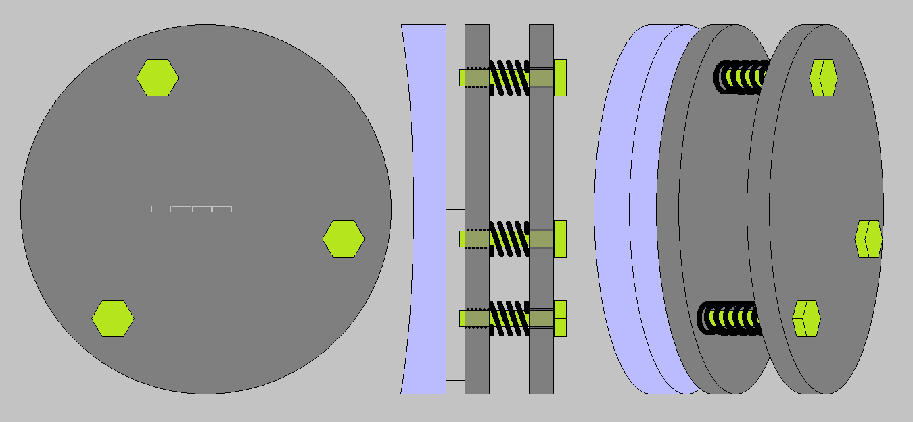
Version 2. The cell of the telescope's primary mirror, adjustable by three pairs of screws, in each pair there is an attracting screw and a locking screw. In total, the cell has six screws.
This type of telescope primary mirror cell is difficult to collimate, but guarantees considerable rigidity, so it will work well for telescopes with large mirrors and for astrophotography.
The primary mirror cell has three pairs of screws, in each pair, one screw attracts the moving part, to the stationary part, and the second screw, repels the moving part, from the stationary part, thus eliminating the resulting backlash.
Collimation of this type of primary mirror cell is difficult, because it involves the proper adjustment of as many as six screws, and their screwing in, or out, tilts the moving part of the cell together with the mirror in the desired direction.
To move the moving part of the cell with the primary mirror away from the stationary part, you must first loosen the attracting screw, and eliminate the resulting range of freedom by tightening the counter screw.
Conversely, in order to bring the moving part of the primary mirror cell closer from the stationary part, the counter screw must first be loosened, and only then can the moving part of the primary mirror cell be attracted by the attraction screw.
With this solution, there is a risk that if you try to attract the moving part of the primary mirror cell with the attracting screw, without first loosening the counter screw, you will break the thread, because the moving part of the primary mirror cell, supported by the repelling screw, will have nowhere to move.
The graphic below shows two typical configurations for this solution.
4-2
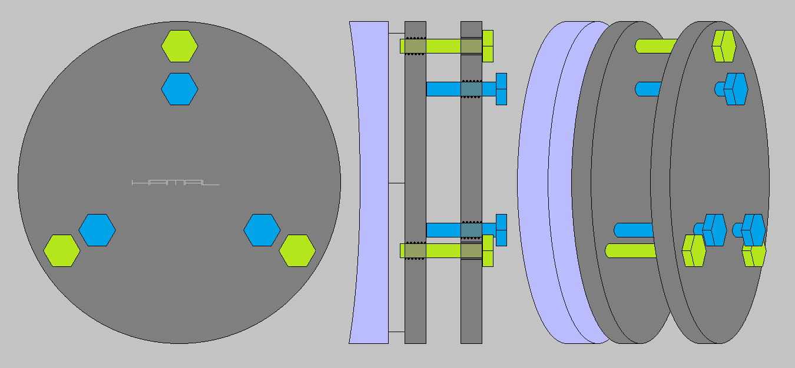
4-3
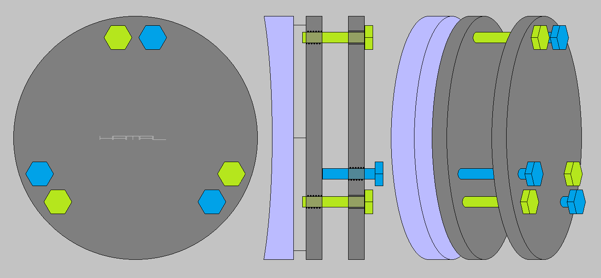
The following animation shows the operation of a pair of screws. The attracting screw is located at the top. The counter screw is at the bottom. 4-4
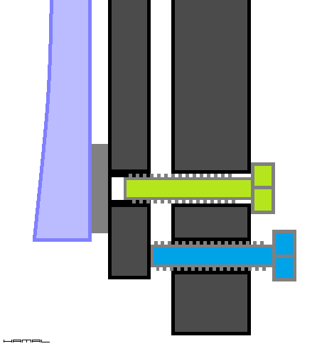
Version 3. The cell of the telescope's primary mirror, adjustable by three screws with springs, additionally immobilized by three counter screws.
In this version, the primary mirror cell has three attraction bolts with springs, spaced every 120°, and between them, alternately, three counter screws, spaced every 120°, which together form support points spaced every 60°.
This type of primary mirror cell has medium stiffness, but there is a chance that it will work well in telescopes that have a large mirror and in astrophotography, but collimation of this type of cell is very cumbersome.
4-5
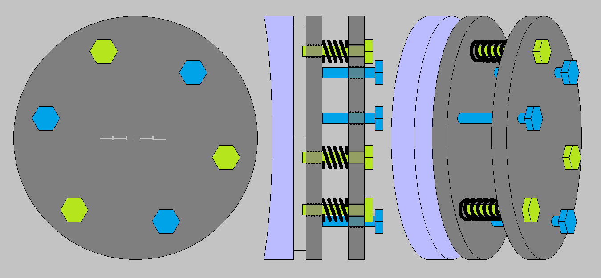
The collimation of this type of primary mirror cell consists of an initial undoing of the counter screws (see graphic below), then adjustment with three screws with springs, and finally securing the acquired setting with counter screws. Unfortunately, with larger and heavier mirrors, the springs used by the manufacturer do not manage to push out the moving part of the primary mirror cell, which sometimes requires pushing it out with the thumbs. Yes, you read that right, sometimes you have to help yourself with your thumbs. Once you've managed to properly align the primary mirror, it's time to immobilize it with counter screws. Unfortunately then, due to the lack of rigidity of the primary mirror cell, and the fact that the counter screws are far away from the attracting screws, (alternating, every 60 degrees), when you start tightening the counter screws, the primary mirror cell will deform, causing you to lose what has been aligned so far.
How to deal with this type of cell of the primary mirror of the telescope?
First, withdraw the counter screws (see graphic below), then using the screws with springs, collimate the telescope's primary mirror.
4-6
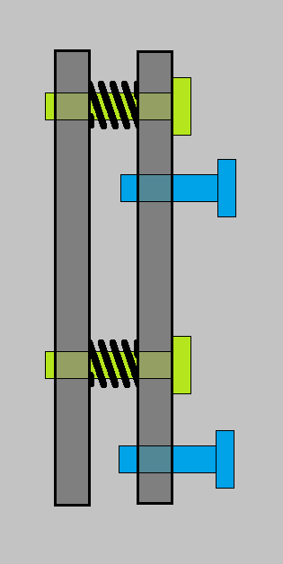
And once the perfect position of the primary mirror is obtained, slowly screw in the counter screws until they gently touch the moving part of the primary mirror cell with their tips, as in the graphic below.
4-7
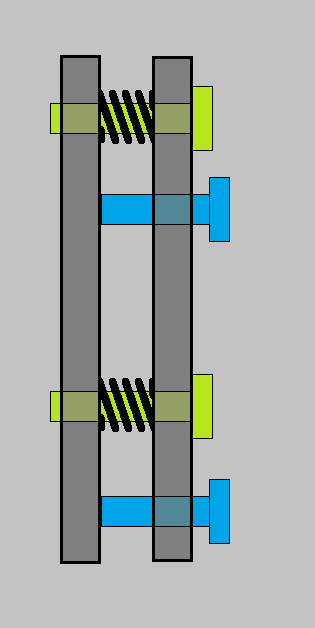
Then we tighten each counter screw by a quarter turn, after which we check, by looking through the center hole of the secondary mirror spider hub, how much we have broken the alignment of the primary mirror. Then, already sensitively, we tighten only those counter screws that give us the desired results, with the aim of fixing what is broken. Due to the fact that at this stage of the work, in this type of cell, the reactions of the primary mirror are absolutely unpredictable, it is best to do it with two people. One operator looks through the spider hub hole into the telescope and gives commands: - This screw! - Another screw! - Twist a little more! - Stop! - Undo what you just did, while the other operator carefully executes the commands. This way it is much faster and much easier. In this type of primary mirror cell, in the course of using the telescope, it is better not to move anything anymore, well, unless you feel like repeating the whole procedure from scratch.
You may be wondering for what purpose we are tilting the primary mirror in all directions.
The primary mirror of a telescope has an optical axis (invisible to us) emerging from its center. Our goal in the collimation process is to direct the optical axis of the primary mirror to the collimator hole located in the focuser.
5-1
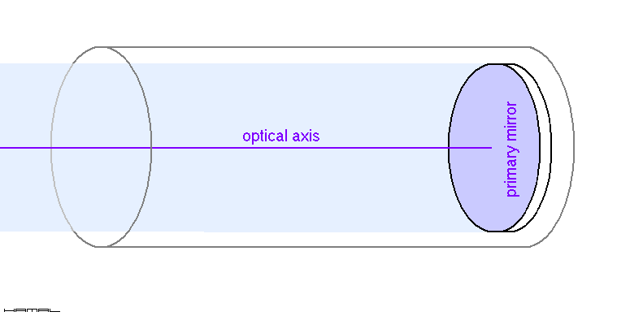
We point the optical axis of the primary mirror at the target like a laser beam, and since one animation replaces a thousand words, see the graphic below. When we adjust the cell of the primary mirror, we cause the mirror to tilt in different directions, our task is to direct the optical axis of the primary mirror (the purple line coming from the center of the mirror), to the appropriate place on the secondary mirror, so that eventually the optical axis of the primary mirror is directed to the collimator hole.
In a telescope, the primary mirror produces an image straight ahead, that is, at the entry point of the telescope tube, but this is not a good place, so the imaging plane must be redirected to the focuser, and to achieve this, an additional flat mirror must be used. The secondary mirror, as this additional flat mirror in a Newtonian system telescope is called, accomplishes this task. The secondary mirror is installed at the inlet of the tube, but the way it is installed is quite specific, as it must give adequate support, and at the same time, obscure as little as possible the inlet of the tube. The mount in question is called a spider. The most common are three-armed and four-armed spiders. In addition, this type of holder, like the primary mirror cell, also needs to be able to adjust the secondary mirror in different directions, and for this purpose, it usually has four screws. The middle screw attracts the secondary mirror holder to the spider, and the outer three repel it. Specific screws must be loosened and tightened depending on the desired movements of the secondary mirror.
The animation below shows the basic movements of the secondary mirror.
6-1
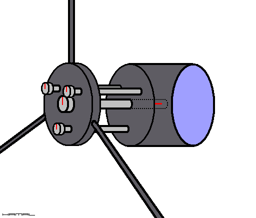
By collimating the secondary mirror, we cause (among other things), its tilt to different sides. Our task is to position the secondary mirror so that the optical axis of the primary mirror (the purple line coming from the center of the primary mirror), is directed to the collimator hole.
One animation replaces a thousand words....
6-2
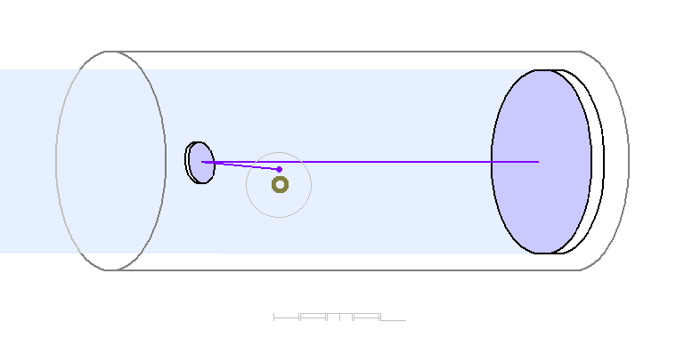
Telescope collimation - simplified - for beginners - DESCRIPTION
Since your experience does not currently allow for more, we will focus on simplified collimation. Time will come for more advanced measures.
- We collimate the primary mirror of the telescope when the telescope tube is in the vertical position.
- Collimation, removal and installation of the secondary mirror is done when the telescope tube is in a horizontal position, so that if, in a moment of inattention, the secondary mirror falls out of hand, it will not fall directly onto the primary mirror.
- Hold the tools with a firm grip and take your time.
| IMPORTANT |
The collimation described below should be done with the collimator pinhole placed in the focal point of the telescope, otherwise you will not get the correct result.
How do I determine where in the telescope the focal point is? Read HERE.
If meeting the above condition proves too difficult for you at present, set the focuser to the middle of the working range and then collimate the telescope.
We insert the pinhole collimator into the focuser the same way one inserts an observation eyepiece. Adjust the focuser with the above notes in mind and look through the hole of the collimator into the telescope.
It is possible that your telescope is properly collimated, in which case your eyes will see a view like the following graphic.
7-1
The graphic below explains what we are looking at.
7-2
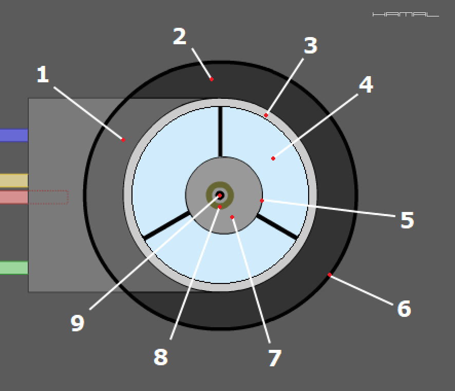
1 - Secondary mirror holder.
2 - The walls of the telescope tube from the inside.
3 - Secondary Mirror.
4 - The reflection of the primary mirror in the secondary mirror.
5 - The reflection of the secondary mirror and the spider in the primary mirror, again reflected in the secondary mirror.
6 - The inside of the focuser drawtube.
7 - The lid of the collimator seen from the inside.
8 - Reflective collimator ring.
9 - A circular spot at the center of the primary mirror.
But there are several key relationships in this inconspicuous graphic, if you want to properly collimate your telescope, you need to be aware of their existence.
Namely...
The distances between the edge of the secondary mirror and the inside of the wall of the focuser drawtube should be the same.
7-3
The distances between the edge of the secondary mirror and the outline of the primary mirror reflected in it should be the same.
7-4
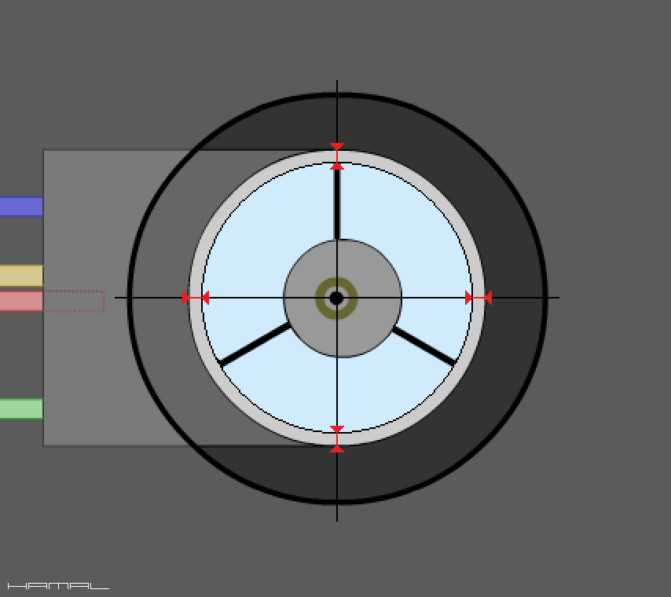
The distances between the spot on the primary mirror and the outline of the wall of the focuser drawtube should be the same.
7-5
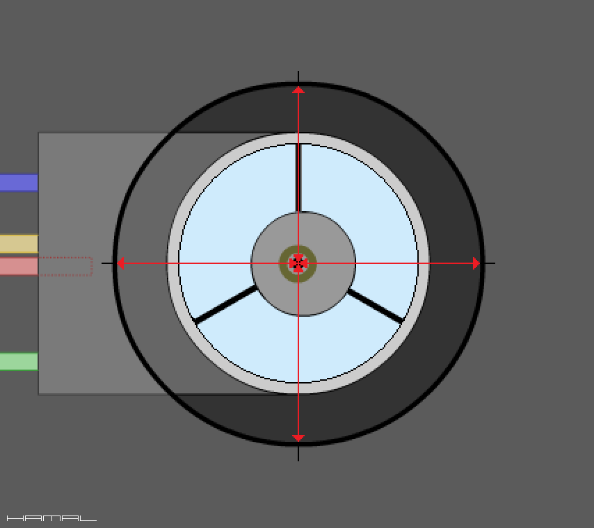
Only the distances marked below with red arrows, do not have to be equal, the apparent asymmetry is due to the intended asymmetry of the mounting of the secondary mirror, but let's not get into this aspect for now, you will gain more experience, explore the issue.
7-6
However, if you would very much like to preview right now what the shift of the secondary mirror in the telescope is due to, CLICK.
(If necessary, you will return here by pressing the BACK button on your browser)
However, if the view in the collimator does not reflect what the above graphics present, and this is often the case, it is time to get down to business, namely collimation. :)
We will start the process of collimating the telescope by aligning the secondary mirror.. The first drawings do not include the reflections we see in the secondary mirror, as it is not important at this stage of collimation.
The secondary mirror alignment defects presented below usually occur simultaneously, but for readability of the description, we will break them down into individual cases.
The first common situation is shown in the graphic below. As you can see, the secondary mirror relative to the walls of the focuser drawtube is placed too high, sometimes it is also placed too low, while it should be placed centrally. The black circle in the graphic is the inside of the focuser drawtube. The distance indicated by the red arrows should be the same, to achieve this, in this case, the green screw should be removed slightly, and the blue screw should be screwed in.
The arrangement of screws in your telescope may be different, the example just illustrates the issue.
Also, remember to loosen some screws first so that you can then tighten others. Nothing by force, everything with sensitivity.
8-1 See what you are aiming for.
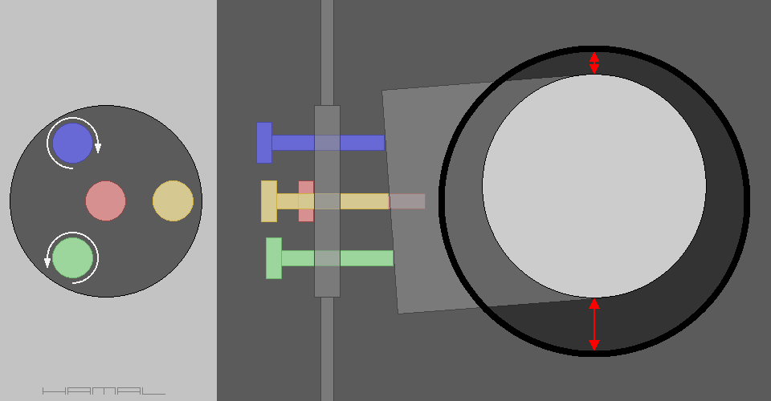
The graphic below shows another common case. As you can see, the secondary mirror is offset to the left relative to the focuser, it is placed in the telescope tube too shallow, because the inside of the telescope tube is on the right side, and the opening of the tube, is on the left side. By analogy, when the secondary mirror is shifted to the right side relative to the focuser, it means that it is placed in the telescope tube too deep. The secondary mirror should be placed centrally, the distance indicated by the red arrows should be the same. In order to get the secondary mirror positioned correctly in the case shown in the graphic, the red center screw should be removed, and the three outer screws, green, yellow and blue, should be screwed in. As a result of our actions, the mirror will move to the right side (into the depth of the tube), while in the case where the mirror is set too deep, the actions should be performed in reverse, analogous to the situation.
8-2 See what you are aiming for.
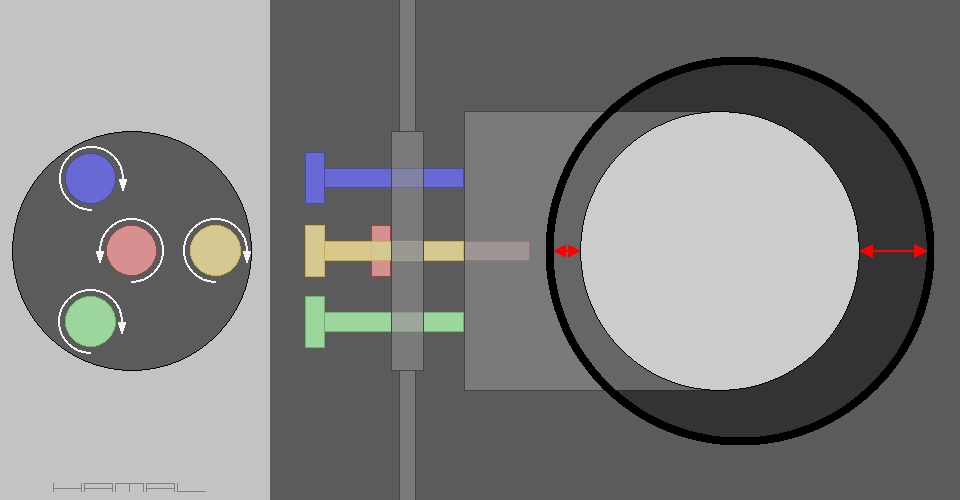
8-3 The graphic below shows the correct positioning of the secondary mirror relative to the outline of the focuser drawtube.
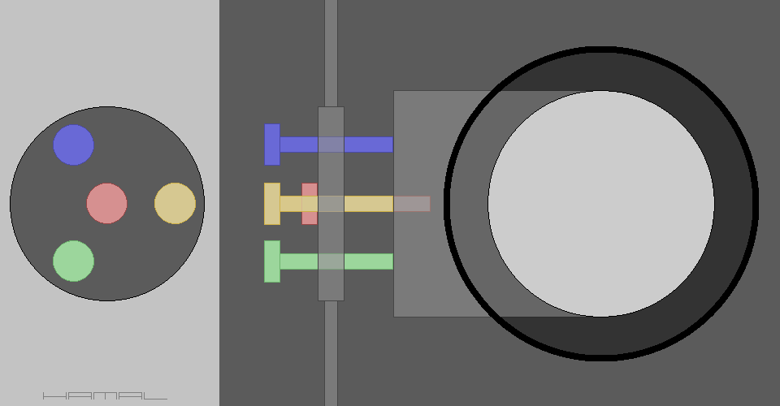
Now you can pay attention to what you see in the reflection of our secondary mirror. A common case is when the secondary mirror is twisted in its axis, and in order to correct this, you need to very slightly loosen the central screw (red), but do it gently, so as not to lose what we previously set, then grasp the secondary mirror holder firmly with your fingers, and gently rotate the whole thing in the necessary direction. In the case shown in the graphic below, in the direction indicated by the arrow, otherwise, analogous to the situation.
8-4 See what you are aiming for.
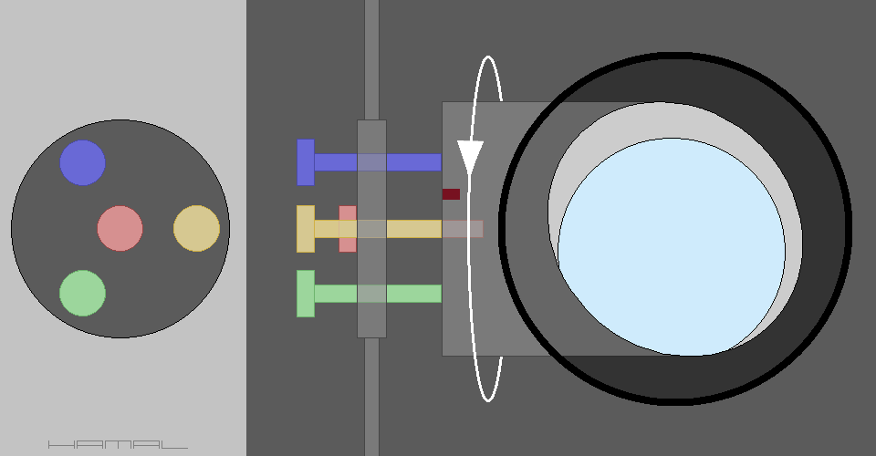
In this example, the secondary mirror along with the holder is tilted towards us, your task is to use collimation screws to make the secondary mirror move back until it reaches the desired position.
8-5 See what you are aiming for.
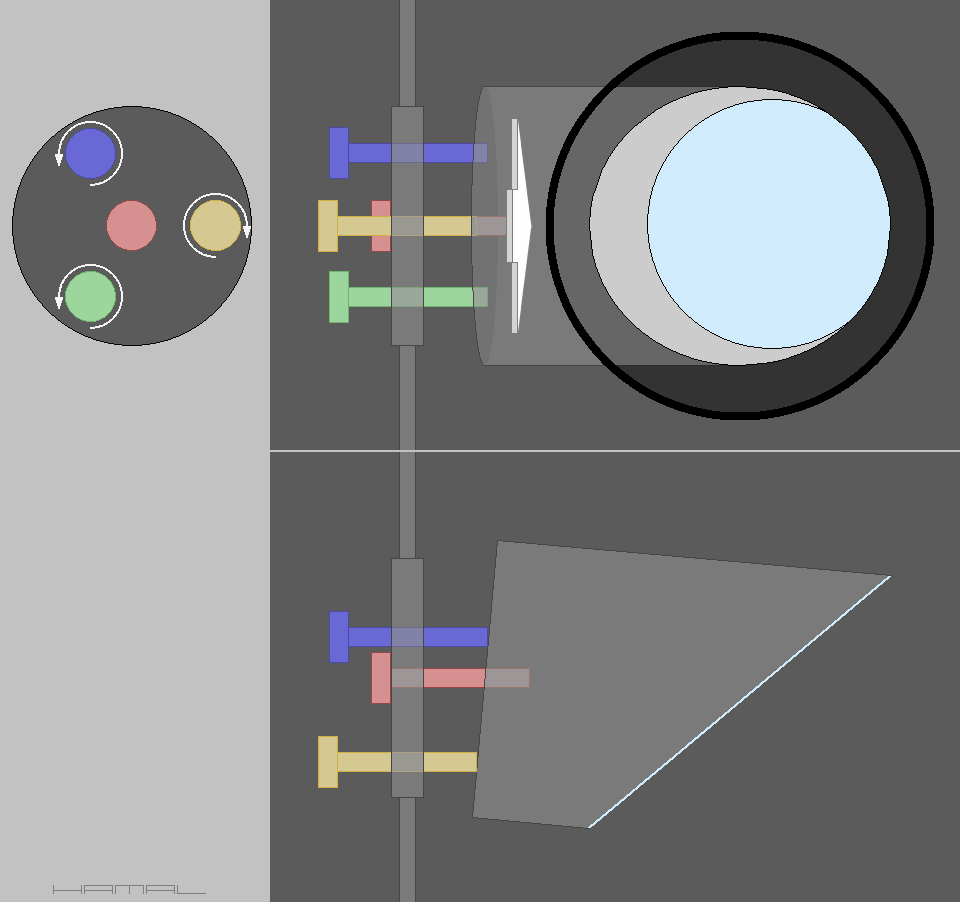
In this example, the secondary mirror along with the holder is tilted backwards, your task is to use collimation screws to make the secondary mirror slide until it reaches the desired position.
8-6 See what you are aiming for.
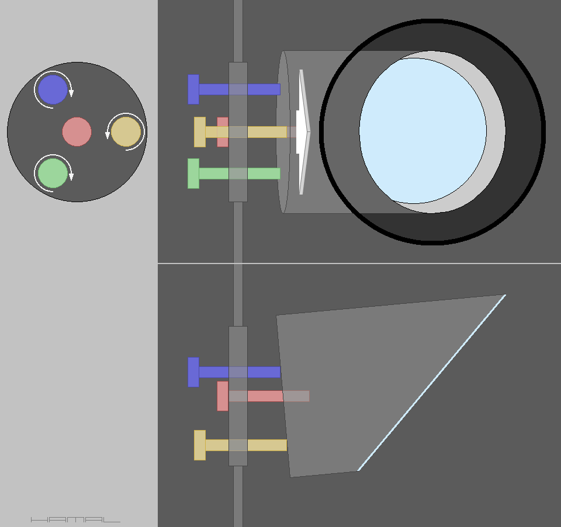
If we have obtained the following view, it means that we have done everything correctly and our activities at the secondary mirror are already completed.
The graphics do not include what we see in the reflection in the secondary mirror, because up to now it has been irrelevant.
Now we can look at what is seen in the reflection of the primary mirror reflected in the secondary mirror (graphic below).
There you will see a bright background, the sky, the ceiling, or something else, depending on what you are aiming the telescope at. Against this background you can see the secondary mirror holder, and the secondary mirror itself, most likely, offset from the outline of the primary mirror, and the center spot on the primary mirror (black dot). We can also see, from the inside, the lid of our collimator and the reflective ring glued to it, and in the middle of the reflective ring, the pinhole, the one through which we are looking.
9-1 See what you are aiming for.
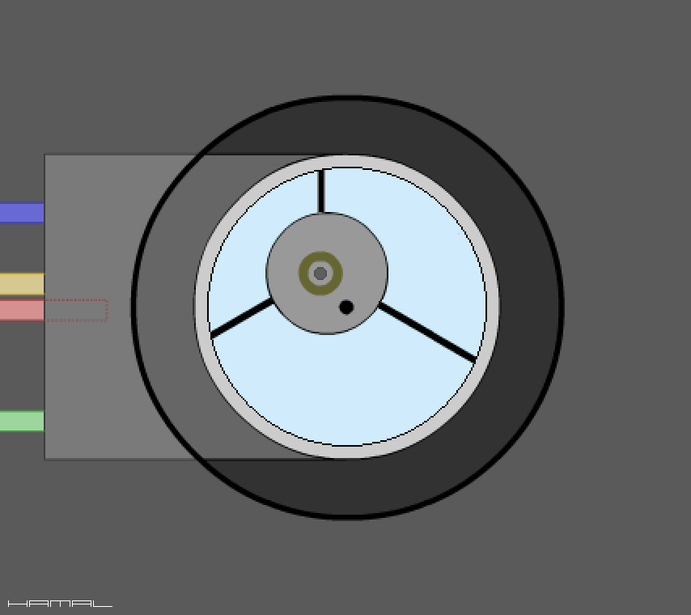
As a reminder, collimator.
To correct the inaccuracies revealed above, we need to make adjustments with the screws of the primary mirror cell, keeping in mind the rules of handling them. We make small rotations with the screws, all the time keeping track of the view in the collimator, so that we know what the effect of our actions is. If the reflective ring of the collimator and the spot on the primary mirror, as a result of our actions, approach each other, we continue our actions until the spot of the primary mirror, is perfectly in the center of the ring in the collimator. At first, the reflective ring of the collimator will not always want to approach the spot, but after gaining some practice, their alignment will take only a moment. If the telescope is so large that it is difficult to turn the screws and at the same time observe what is going on, it is worth using the help of another person. We give commands, and the helper turns the screws until a satisfactory result is obtained.
When the telescope is collimated correctly, the view presented in the following graphic will appear to our eyes in the collimator.
9-2
But after all, it is asymmetrical there! The outline of the secondary mirror is shifted to the right, as shown by the red arrows in the graphic below.
That's right, it is asymmetrical, but everything is correct, this contour must be shifted slightly towards the primary mirror, this is a normal phenomenon, this asymmetry is due to the intended asymmetry of installation on the secondary mirror holder (Offset) CLICK (If necessary, you will return here by pressing the BACK button on your browser)
9-3
Finally, keep in mind that:
- not all secondary mirrors aligned at 45° form a perfect circle.
- Secondary mirrors are not always factory installed with a perfect offset.
- The tubes, even of expensive telescopes, are sometimes egg-shaped and bent.
- Installing the focuser correctly on the telescope tube is no small feat.
The real world is not perfect, it is only graphics that are pixel-perfect. Not every telescope can be collimated perfectly, even an expensive one that looks like a spaceship.
When you manage to get a decent result, be proud of yourself, and don't beat yourself up over small inaccuracies.
Such a small digression :)
9-4 As a reminder, a description of the elements.
1 - Secondary mirror holder.
2 - The walls of the telescope tube from the inside.
3 - Secondary Mirror.
4 - The reflection of the primary mirror in the secondary mirror.
5 - The reflection of the secondary mirror and the spider in the primary mirror, again reflected in the secondary mirror.
6 - The inside of the focuser drawtube.
7 - The lid of the collimator seen from the inside.
8 - Reflective collimator ring.
9 - A circular spot at the center of the primary mirror.
TELESCOPE COLLIMATION - extended - for the experienced
The simplified description of collimation presented above is correct, it allows a complete beginner in astronomy to get accustomed to the issue of adjusting the optics of a newly acquired telescope, however, in order to make a more precise collimation, you need to dig into the telescope even more, but this already requires more knowledge.
The section consists of several topics, click the relevant name to be taken to the section you are interested in.
-- ! RIGOR !--
Collimating a telescope using a pinhole collimator, in terms of:
- checking the contour of the secondary mirror relative to the focuser tube,
- ochecking the contour of the primary mirror as seen in reflection in the secondary mirror,
and
- collimating the telescope using a camera,
must necessarily be performed from the plane of focus in the telescope.
In the case of a pinhole collimator, with the pinhole placed in focus in the telescope.
In the case of a camcorder, with the lens placed at the focus point in the telescope.
How do I determine where in the telescope the focal point is? Read HERE.
Why do you need to meet this requirement? Read HERE.
What is a secondary mirror offset? Let me explain it this way ...
Light arriving from distant space enters the telescope as a parallel beam of rays, such as a cylinder.
10-1
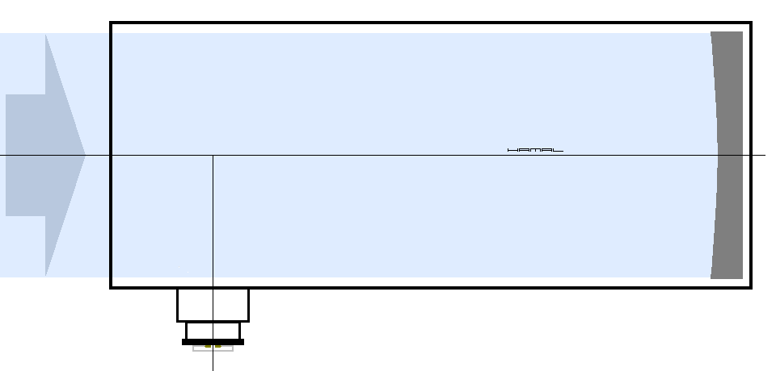
Such a cylinder of light hits the primary mirror, which is parabolic or spherical, and therefore, focuses the light in one place, just as a lens focuses the sun's rays. This point where the rays meet is called the focus spot. A cylinder of light, when reflected from the primary mirror, transforms into a cone of light.
10-2
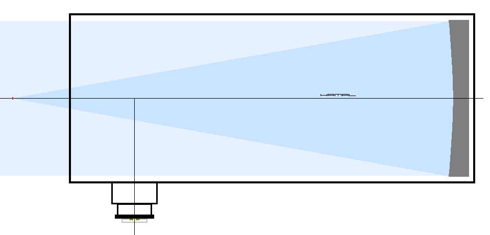
Unfortunately, as you can see in the image above, the focus spot falls in front of the telescope, and since it is impossible to view the stars through the telescope by covering the tube inlet with your head, the telescope has an additional small flat mirror (secondary mirror) that will direct the light to the side, into the focuser.
10-3
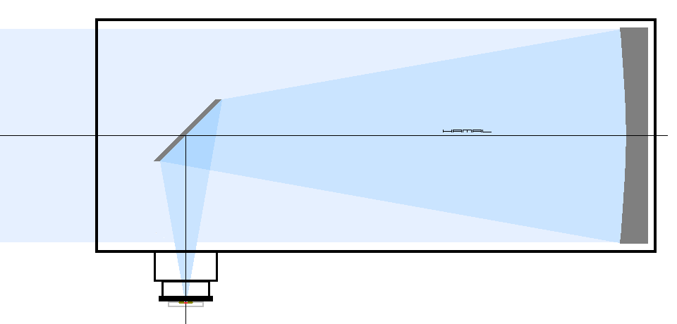
The thing is that the light we want to direct to the side is already a cone, not a cylinder.
To reflect a cylinder of light, at 90°, you need a centrally placed elliptical mirror (graphic below - top), but, to reflect a cone of light, at 90° (graphic below - bottom), you need an elliptical mirror placed asymmetrically, must be slightly offset.
For easier understanding of the problem, draw any straight cone and partition it with a line at an angle of 45°, one part of the dividing line will always be longer (right yellow) and the other shorter (left red). In the partitioned cylinder, the right side (yellow) and the left side (red), will be of identical length. So in order to cover the entire cone of light with the secondary mirror, you need to move it a little.
10-4
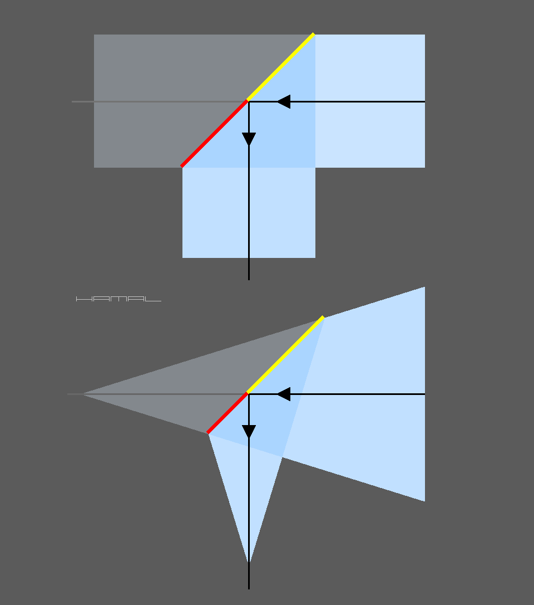
Here are two examples, the first, a telescope with an offset secondary mirror, and the second, a telescope with a secondary mirror installed symmetrically/centrally (no offset).
A telescope with a secondary mirror having an offset. 10-5
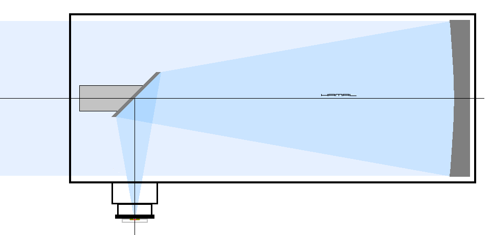
A telescope with a secondary mirror that has no offset. 10-6
When the secondary mirror has no offset, some of the light that should be directed toward the focuser escapes (orange circle), plus we have an unused portion of the secondary mirror (yellow circle).
Telescope with a secondary mirror that has no offset (zoom). 10-7
Often during collimation there is a problem in determining whether the telescope elements observed by the collimator are in the center of the focuser drawtube, something is needed to narrow the field of view, giving a better reference point. For this purpose, we make a circular diaphragm out of cardboard. A compass cutter can be used to cut out the diaphragm. From cardboard with a thickness of 1mm, we cut out a circle with a diameter equal to the inner dimension of the focuser drawtube from the telescope tube side (graphic below - red color). In the cut circle very precisely in the very center we cut a circular hole of 5-10 mm in diameter. This diaphragm, combined with our pinhole collimator, will provide us with high accuracy in aligning the optics, as you will see further on. There are collimators in the form of a long tube, which has a cross of wires at the end, unfortunately, it is enough to install them in the focuser minimally crooked, so that they do not do their job properly. The diaphragm I propose to you, combined with a pinhole collimator, positions the focuser drawtube flawlessly.
For the purpose of description, I will refer to the diaphragm in question as "red diaphragm", I hope it is obvious that it can be any color.
Telescope collimation - extended - for the experienced - DESCRIPTION
Collimation of the primary mirror is done when the telescope tube is in the vertical position, because then the primary mirror lies supported evenly.
Collimation, removal and installation of the secondary mirror is done when the telescope tube is in a horizontal position, so that if the secondary mirror falls out of hand in a moment of inattention, it will not fall directly onto the primary mirror.
Hold the tools securely and do not rush.
The spider of the secondary mirror, is a bracket, three-armed or four-armed, located on the front of the telescope tube. The spider should be installed in the telescope tube perfectly in the center, but manufacturers often neglect this aspect and it will be our task, to set this element properly.
We start by carefully removing the secondary mirror from the mount. Next, we use a schoolyard compass to measure the distance from the center hole of the spider hub to the walls of the telescope tube (light green arrows in the graphic) to see if the element is positioned perfectly on center. If there are differences in the distance, we make adjustments with screws that adjust the length of the spider blades.
NOTE - the described method is applicable to telescopes that have a body in the form of a uniform tube, but for telescopes with a folding or truss structure, the only way to properly align the focuser is the method described HERE.
Telescope manufacturers, especially the affordable ones, do not pay due attention to the correct installation of the focuser, so our task will be to align it correctly. What is covered by the term "correct alignment" and for what purpose do we do it? To properly collimate the telescope, the focuser must be set so that its axis intersects with the axis of the tube and the optical axis of the primary mirror, in addition, the axes should intersect perfectly at right angles. With the help of the following steps we will try to achieve this.
13-1
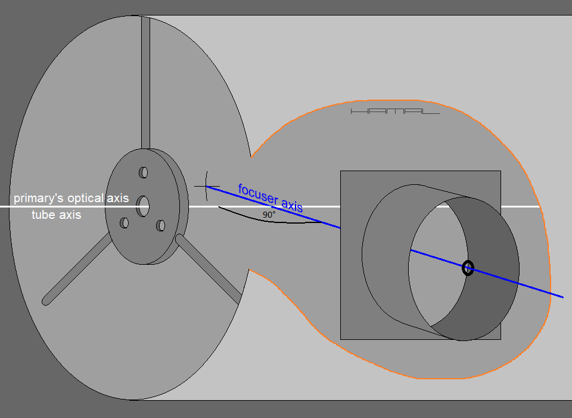
To begin with, we need some reference point against which we can adjust the focuser. To do this, inside the telescope's tube, exactly on the opposite side of the focuser, we will determine the point to which we aim the focuser axis.
The determination of the point in question will be in two stages.
1 First, measure the inner circumference of the telescope tube to determine where the x1 and x2 arrows meet, located on the opposite side of the focuser. Do as the graphic below suggests, see the white line with arrows. Using a strip of paper, from the inside of the telescope tube, measure its inner circumference. Wanting to adjust the length of the strip of paper, shorten it piece by piece until you get the perfect dimension. When we are satisfied with the result, we remove the strip from the tube and, using a ruler, divide it into two equal sections to determine the place marked by the blue arrow. We put the paper strip into the tube again and using it, we mark the place where the x1 and x2 arrows meet. We transfer the determined position from the paper strip to the telescope tube, marking its position on the inner wall of the tube. I suggest that you do not scratch anything on the black paint, but stick a piece of masking tape in this place and draw lines on the tape with a pencil.
Theoretically, we should measure the circumference of the telescope tube from the axis of the focuser, but, since the focuser drawtube is circular and therefore symmetrical, it does not matter that the measurement was taken from the walls of the focuser drawtube and not from its axis. It's simpler this way, because the problem of determining the location of the axis of the focuser drawtube (the contact of the yellow arrows, to the right, in the figure below) is dropped.
13-2
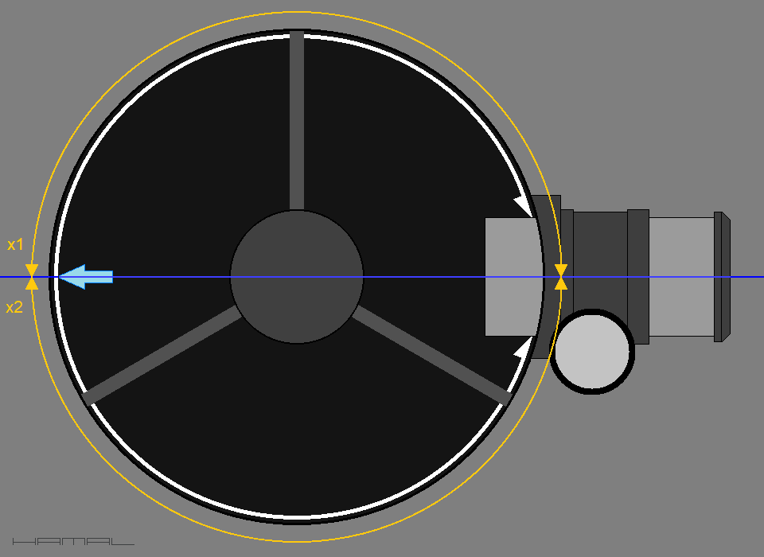
Now we can proceed to determine the dimension - y.
2 To do this, use a ruler to determine identical lengths y1 and y2 on both sides of the telescope tube.
First, we measure the distance y1 (from the edge of the tube, to the center of the focuser), to then, on the opposite side of the tube, measure the same distance as the y2 dimension. (See graphic below)
13-3
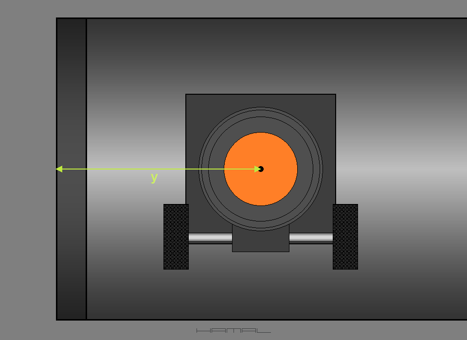
When in the circumference of the telescope tube x1 = x2, and the distance y1 = y2, it means that the crosshair, which is a marker for aligning the focuser axis, has been placed in the right place.
13-4
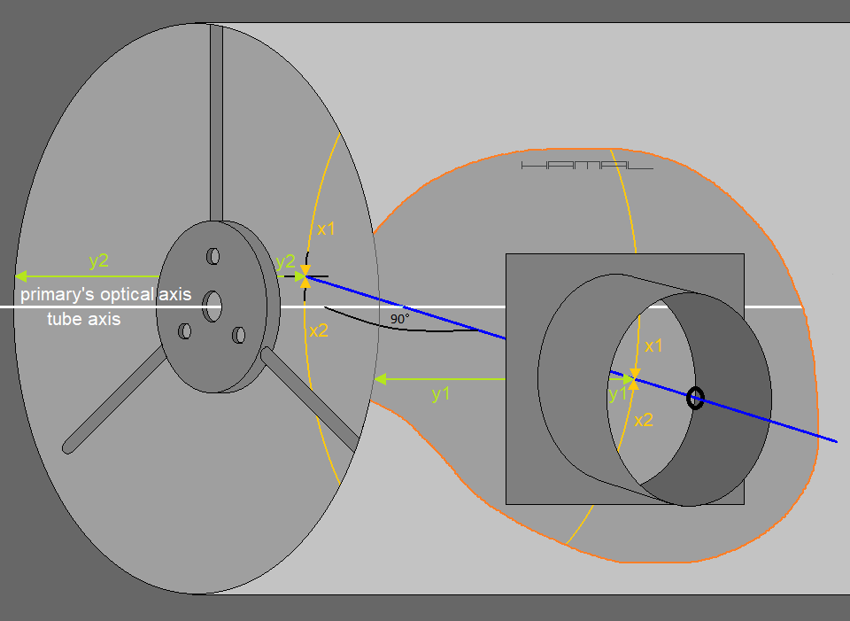
Having the marker/crosshair, we can proceed to check if the focuser is set correctly. If it is set correctly, the focuser axis is aimed at the marker/crosshair, if the focuser is not set correctly, it aims its axis somewhere next to it.
To check this, we put a pinhole collimator in the focuser (where we put the observation glasses) and look through the collimator into the telescope to judge what we are dealing with.
View in the collimator - marker/crosshair on the opposite wall of the telescope tube. 13-5
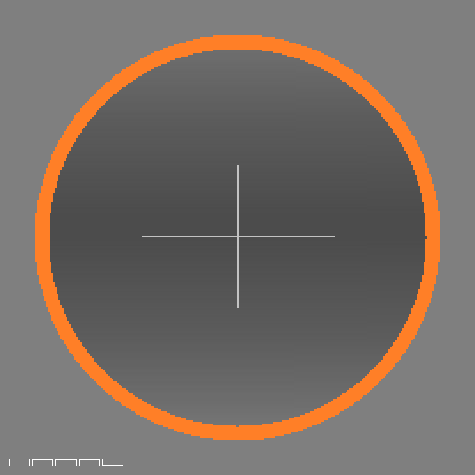
What's what. 13-6
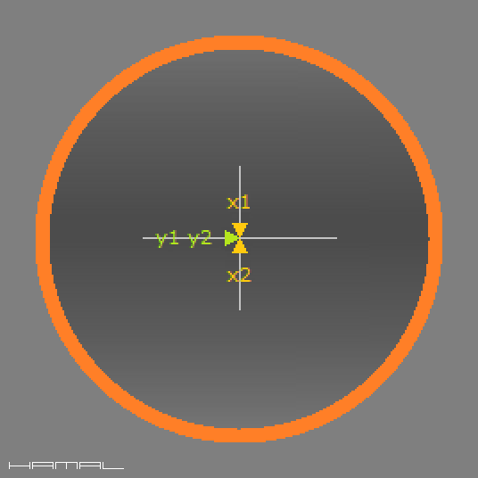
We immediately perceive that due to the lack of a good reference point, it is hard to tell if the marker/crosshair is perfectly in the center of the focuser drawtube, so to remedy this, we install the "red" diaphragm according to the graphic below. Diaphragm description HERE. (If necessary, you will return here by pressing the BACK button on your browser)
13-7
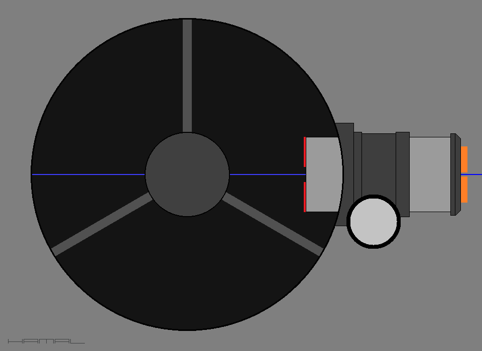
13-8
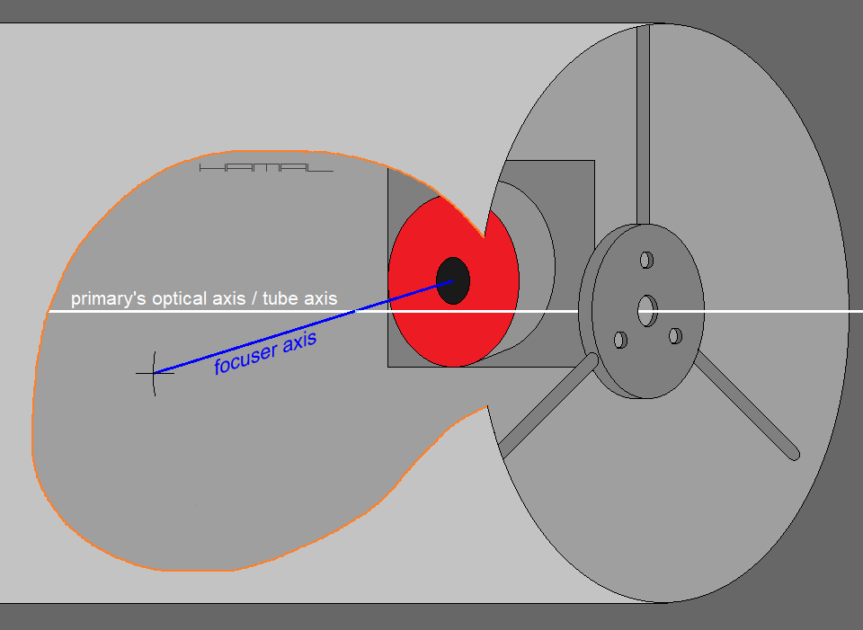
The diaphragm has been installed in the focuser drawtube, so looking through the hole of the collimator, we can see only a small section of the inside of the telescope tube, see the graphic below (the secondary mirror is currently missing). Exactly in the center of the diaphragm hole (graphic below), there should be a marker/crosshair, if this is the case, then we have a properly installed focuser, we are lucky, and if this is not the case, then we have an improperly installed focuser, and we need to correct its alignment. When the telescope has an adjustable focuser, the task is made easier, but when the eyepiece focuser has no adjustment, we have to work another way. This requires loosening the screws with which the focuser is attached to the telescope tube, and shimming flat washers of the appropriate thickness under the corners of the focuser until the collimator, diaphragm hole and marker/crosshairs on the telescope tube are aligned, as in the graphic below.
The view in the collimator we are aiming for. 13-9
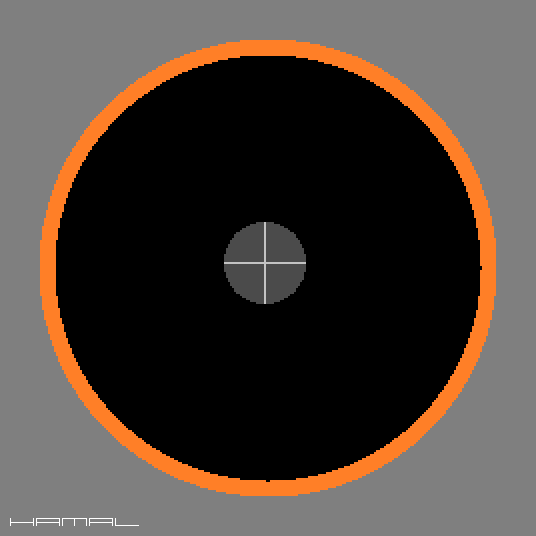
What's what. 13-10
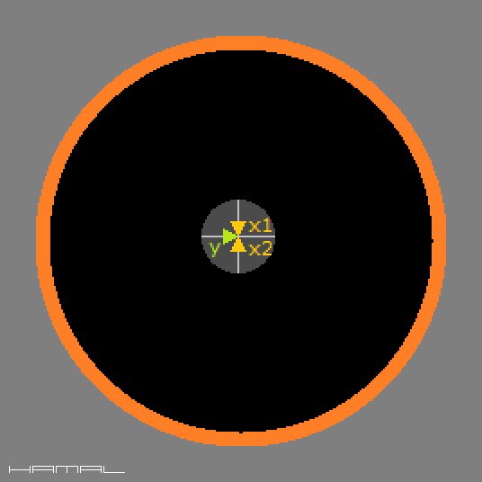
After obtaining the effect presented in the above graphic, we remove the "red" diaphragm from the focuser drawtube and set the telescope tube in the vertical position.
Now we will perform a test to verify that there is an intersection of the axis of the focuser and the axis of the primary mirror.
Through the center hole in the hub of the secondary mirror spider, into the inside of the telescope tube, lower a small weight using a thread, so low that it reaches the center of the primary mirror. The weight should be secured from underneath, using felt, so you will be able to put it on the center spot of the primary mirror without fear of scratching the mirror. When the weight stands, it does not swing annoyingly. Next, the thread should be stretched slightly, so that it is straight, like a string. Now it is already possible to proceed to the visual inspection. Looking through the opening of the collimator, you should see a dangling thread, and behind it, on the wall of the telescope tube, at the very center, a marker/crosshair. The thread should pass through the center of the crosshair.
View in collimator (telescope tube in vertical position). 13-11
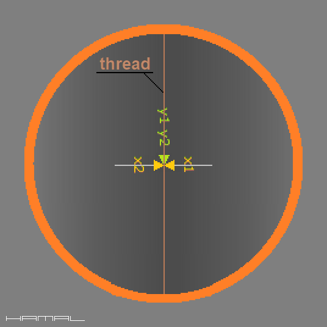
General view (telescope tube in vertical position). 13-12
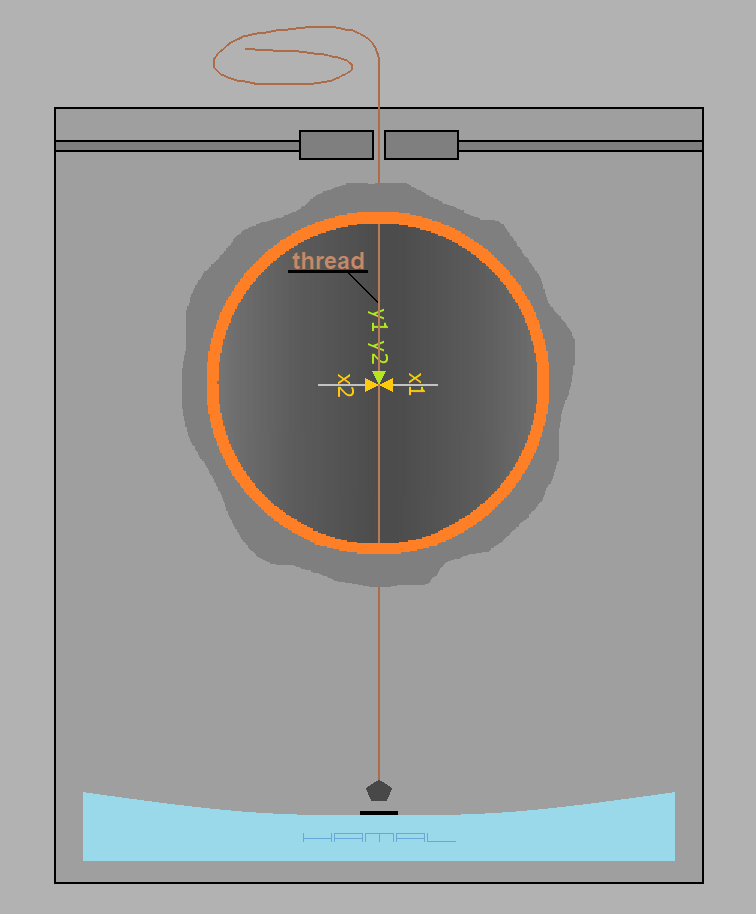
When the thread does not run through the center of the marker, it means that the secondary mirror spider is not aligned correctly with respect to the optical axis of the focuser, the axes do not intersect. Theoretically, when the distance from the center of the spider hub to the edges of the tube is identical around the perimeter, and the focuser is installed correctly, then all the elements should align perfectly, but if this is not the case, the cause is most likely the deformation of the telescope tube, our mistakes, or other inaccuracies.
View in the collimator (telescope tube aligned vertically). Error in alignment of the axis intersection, the thread is shifted to the side. 13-13
Once the secondary mirror spider and the focuser were set correctly, it was the turn of the primary mirror to be set correctly.
Collimation of the primary mirror is done when the telescope tube is in the vertical position, because then the primary mirror lies supported evenly. Observing the primary mirror through the center hole in the spider hub of the secondary mirror (the secondary mirror is still not there), use the cell adjustment screws to adjust the primary mirror so that the spot in the center of the primary mirror coincides with the hole through which we are looking. To make the hole through which we are looking more visible, it is a good idea to use a small flashlight to illuminate the spider hub of the secondary mirror from the inside (see graphic below).
Now it's going to be harder, because the secondary mirror has so many ways to move that getting it right is a challenge.
-- ! RIGOR !--
Collimating a telescope using a pinhole collimator, in terms of:
- checking the contour of the secondary mirror relative to the focuser tube,
- ochecking the contour of the primary mirror as seen in reflection in the secondary mirror,
and
- collimating the telescope using a camera,
must necessarily be performed from the plane of focus in the telescope.
In the case of a pinhole collimator, with the pinhole placed in focus in the telescope.
In the case of a camcorder, with the lens placed at the focus point in the telescope.
How do I determine where in the telescope the focal point is? Read HERE.
Why do you need to meet this requirement? Read HERE.
Let's start with the fact that there is a certain place in the telescope tube, a point where the optical axis of the primary mirror and the axis of the focuser cross. Moreover (theoretically), the two axes cross at this point perfectly at right angles. Our task is to position the secondary mirror so that it is adjacent to this point, while meeting the other collimation requirements. All of our current collimation is aimed at this. This location, in the graphics below, is marked with a blue dot.
15-1
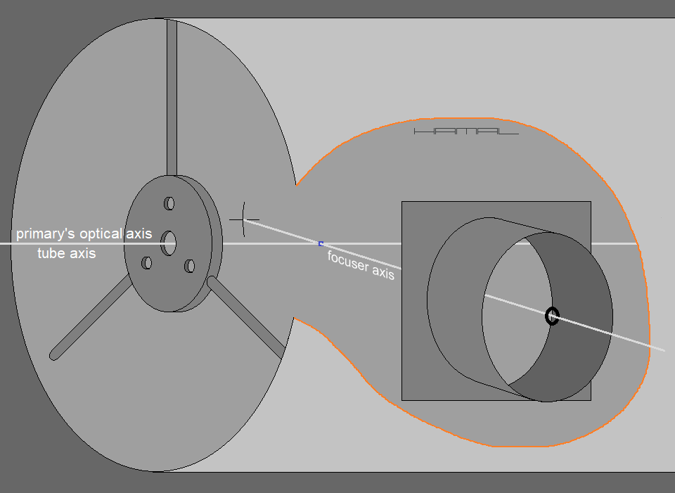
The mentioned place marked with a blue dot.
15-2
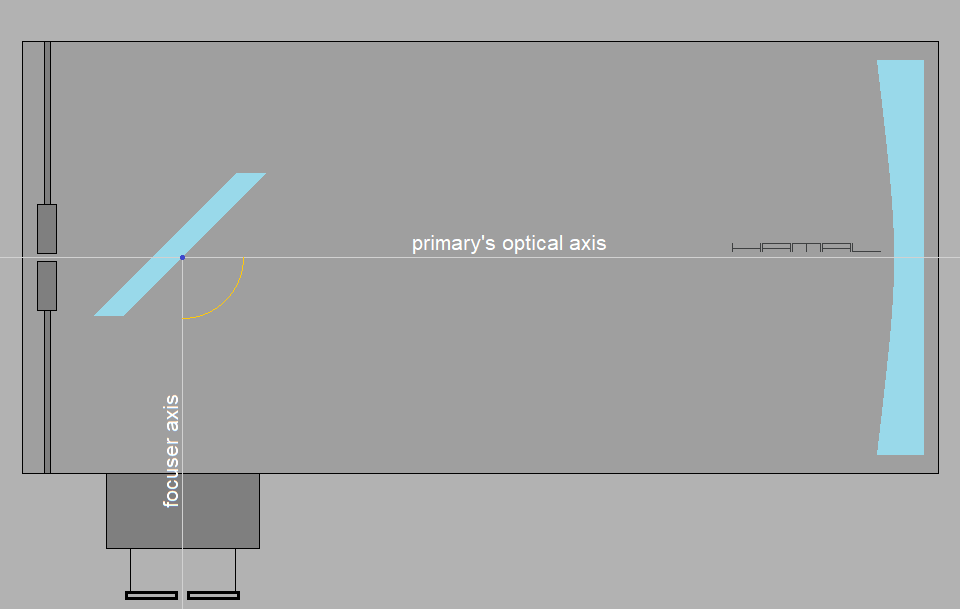
To achieve our goal, we are now focusing our attention on the spot placed on the primary mirror and the reflective ring in the collimator, our task is to align these objects with each other at the center of the red diaphragm. We do not dwell on the issue of the contour of the secondary mirror in the focuser drawtube, because this issue depends on the correct installation of the secondary mirror, and since this aspect is out of our control at the moment, it cannot determine our actions.
When we reinstall the secondary mirror in the telescope, observing through the opening of the collimator (without the "red" diaphragm in the focuser), we adjust the secondary mirror so that the spot of the primary mirror coincides with the reflective ring in the collimator. At this point we are only interested in the spot of the primary mirror and the reflective ring in the collimator, we ignore the contour of the secondary mirror and the contour of the focuser.
We reinstall the circular diaphragm in the focuser drawtube, which will help verify the correct position of the secondary mirror. Most often there is a wrong depth of installation, and to get a positive result, it is necessary to make many corrections, in the meantime taking off and putting on the "red" diaphragm, until you get the view as in the following graphic, Situation 1.
Below is the view in a pinhole collimator with an additional "red" diaphragm attached to the end of the focuser drawtube.
16-1 | Everything is even and symmetrical with respect to each other. .
16-2 | In the telescope - perfectly. .
16-3 | Close-up - perfect. .FFF
Recommendation? Go HERE (If necessary, you will return here by pressing the BACK button on your browser)
Situation 2 - It is not correct.
Below is the view in a pinhole collimator with an additional "red" diaphragm attached to the end of the focuser drawtube.
17-1 | Aligned with each other, the spot on the primary mirror and the reflective ring of the collimator are not centrally visible in the opening of the "red" diaphragm located at the end of the focuser drawtube, they are shifted towards the primary mirror (to the right). .
17-2 | In a telescope - the point of contact of the axes falls inside the secondary mirror. .
17-3 | Close-up - the secondary mirror is installed too deep, and the view in the collimator is due to the fact that ... .
17-4 | ... instead of withdrawing the secondary mirror a little according to the graphic below ... .
... the mirror was tilted sideways until the markers aligned, but the effect is as below ...
17-5 | ... the angles of Q1 and Q2 are identical, the angle of reflection = to the angle of incidence, the markers have aligned, only that the secondary mirror is at the wrong depth. The collimation is not correct. .
17-6 | A reminder of the view in the collimator. .
Recommendation? Install the secondary mirror less deeply.
Situation 3 - It is not correct.
Below is the view in a pinhole collimator with an additional "red" diaphragm attached to the end of the focuser drawtube.
18-1 | Aligned with each other, the spot on the primary mirror and the reflective ring of the collimator are not centrally visible in the opening of the "red" diaphragm located at the end of the focuser drawtube, they are shifted towards the front of the tube (to the left). .
18-2 | In a telescope - the point of contact of the axes falls in front of the secondary mirror. .
18-3 | Close-up - the secondary mirror is installed too shallow, and the view in the collimator is due to the fact that ... .
18-4 | ... instead of inserting the secondary mirror a little deeper according to the graphic below ... .
... the mirror was tilted sideways until the markers aligned, but the effect is as below ...
18-5 | ... the angles of Q1 and Q2 are identical, the angle of reflection = to the angle of incidence, the markers have aligned, only that the secondary mirror is at the wrong depth. The collimation is not correct. .
18-6 | A reminder of the view in the collimator. .
Recommendation? Install a deeper secondary mirror.
Situation 4 - It is not correct.
Below is the view in a pinhole collimator with an additional "red" diaphragm attached to the end of the focuser drawtube.
19-1 | Aligned with each other, the spot on the primary mirror and the reflective ring of the collimator are not centrally visible in the opening of the "red" diaphragm located at the end of the focuser drawtube, they are shifted upward. .
19-2 | In a telescope - the axis of the focuser does not cross the axis of the primary mirror, but passes under it. .
Possible causes?
1 - The spider of the secondary mirror is not perfectly centered in the telescope tube.
2 - You haven't adjusted the focuser as precisely as you think you have.
3 - The axis of the primary mirror is not directed precisely into the center hole of the secondary mirror spider hub.
Situation 5 - It is not correct.
Below is the view in a pinhole collimator with an additional "red" diaphragm attached to the end of the focuser drawtube.
20-1 | Aligned with each other, the spot on the primary mirror and the reflective ring of the collimator are not centrally visible in the opening of the "red" diaphragm located at the end of the focuser drawtube, they are shifted downward. .
20-2 | In a telescope - the axis of the eyepiece focuser does not cross the axis of the primary mirror, but passes over it. .
Possible causes?
1 - The spider of the secondary mirror is not perfectly centered in the telescope tube.
2 - You haven't adjusted the focuser as precisely as you think you have.
3 - The axis of the primary mirror is not directed precisely into the center hole of the secondary mirror spider hub.
Now we can look at what can be seen in the secondary mirror in Situation 1, but without the "red" diaphragm limiting our field of view.
first, however...
- ! RIGOR ! -
The following test should absolutely be performed with the collimator pinhole located in the focus plane of the telescope.
How do I determine where in the telescope the focal point is? Read HERE.
Why do you need to meet this requirement? Read HERE.
-- Now, without the "red" diaphragm, we examine the mutual position of the objects --
Situation 6 Continuation of Situation 1 - everything is set correctly. In addition to the fact that everything is aligned as in Situation 1, in addition, after removing the "red" diaphragm, we find that the reflection of the primary mirror as seen in the secondary mirror is optimal, and the secondary mirror is symmetrical with respect to the focuser tube, and this means that we have a perfect offset of the secondary mirror.
21-1 | The view in the pinhole collimator with the "red" diaphragm attached to the end of the focuser drawtube - perfect. .
21-2 | The view in the pinhole collimator without the "red" diaphragm at the end of the focuser drawtube - perfect. | Remember the aforementioned RIGOR. | .
21-3 | In the telescope - all correctly. .
21-4 | View in the collimator - The red arrows have been marked with the visible asymmetry which is due to the intended asymmetry of the installation of the secondary mirror (Offset). Everything is OK.
| Remember the aforementioned RIGOR. | .
Situation 7 Continuation of Situation 1 - Seemingly everything is set up correctly, as in Situation 1, unfortunately, after removing the "red" diaphragm, we found that the contour of the primary mirror as seen in the secondary mirror is not correct, and this means that most likely, we do not have the correct offset of the secondary mirror.
22-1 | The view in the pinhole collimator with the "red" diaphragm attached to the end of the focuser drawtube - perfect. .
| Remember the aforementioned RIGOR. | 22-2 | The view in the collimator without the "red" diaphragm at the end of the focuser drawtube - less ideal. As you can see, the secondary mirror does not evenly encompass the primary mirror with its contour. .
22-3 | View in the collimator - as we can see, in terms of collimation of markers, everything is as it should be.... | Remember the aforementioned RIGOR. | .
22-4 | In the telescope - ...but the secondary mirror is not installed correctly in the holder. It has the wrong offset. .
What can be done about it? You need to detach the secondary mirror from the mount and mount it correctly, and this is not a simple procedure. However, it is not a serious ailment, struggling with it at the initial stage of experience is an unnecessary risk, the telescope will give correct images, well, unless the above inaccuracy is really big, or the telescope will be used for professional astrophotography, then it is worth considering interference.
------------------------
But... one more thing. In the real world nothing is perfect, many of the operations described above cannot be performed with the accuracy of the thickness of a human hair, any inaccuracies, including the one described above, may have a different cause than you think at the moment. So tormenting yourself now with thoughts of whether it is worth risking the corrections of installing a secondary mirror, it is better to turn into enthusiasm for repeated collimations. If still, despite the experience gained, identical defects persistently come out, only then should you consider bolder interventions in the telescope's design.
------------------------
And finally. The telescope is collimated correctly at the moment, but in larger telescopes, the primary mirror, depending on the quality of the cell and depending on the angle of tilt of the telescope tube, may move slightly, so when we photograph objects at the zenith or just above the horizon, we should check the correctness of collimation every time. We make corrections by adjusting only the primary mirror, as it is the cause of the resulting errors. I leave aside the situation when, in poor telescopes, the secondary mirror also moves, or the entire telescope tube bends, but accurate collimation of such products misses the point.
TELESCOPE COLIMATION - ULTRA - for advanced users
Each field, with time, is explored more and more, and it is no different with the collimation of the telescope, when the fellow begins to look more and more closely at all aspects.
The issues described below are too extensive to include in this guide, so they are placed on separate subpages.
Click the appropriate name to go to the description you are interested in.